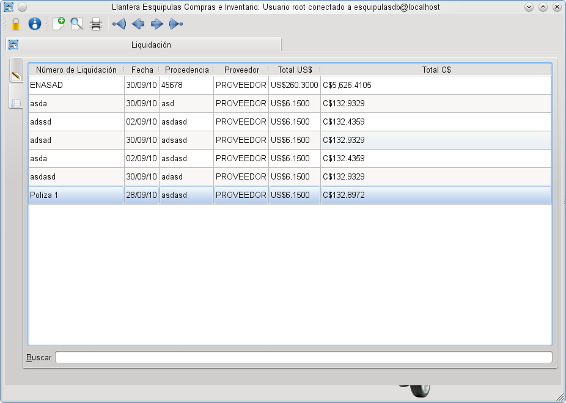
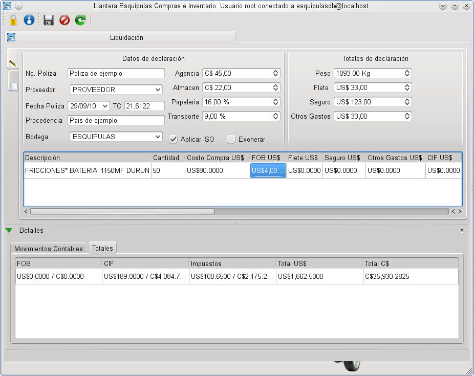

MIS Esquipulas Inventario: Liquidaciones
El modulo de liquidaciones es probablemente el más complejo de la aplicación de inventario, calcula las liquidaciones de costo, permite definir los movimientos contables que se realizan en la liquidación, genera reportes y todo esto manteniendo una vital separación de las responsabilidades de cada usuario.
Navegando Liquidaciones
Al navegar entre las liquidaciones se muestra la vista estandar para navegación que se usa en el resto del sistema, con los mismos iconos y las mismas capacidades de busqueda.
 Navegando liquidaciones
Creando una nueva liquidación
Para crear una nueva liquidación es importante tener a manola siguiente información:
- Numero de poliza
- Proveedor
- Fecha de la poliza
- Procedencia
- Total de agencia, almacen, seguro, flete y otros gastos
- Porcentaje de papeleria y transporte
- Peso
- Si a la liquidación se le aplica ISO, si esta exonerada o si paga impuestos.
- Y por supuesto los datos de cada uno de los articulos en la liquidación
Una vez que se tiene toda esta información se da click en el
boton de crear nuevo documento (  ) y se procede a completar el formulario.
) y se procede a completar el formulario.
Usted podra observar como la mayoria de los valores se calculan de
manera
dinamica en el momento en que usted cambia algo. Por ultimo
presione el boton de guardar (  ) y si la información esta correcta
entonces el documento se guardara.
) y si la información esta correcta
entonces el documento se guardara.
 Creando una nueva liquidación